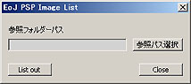

s000192_EoJ_PSP_ImageList

機能： フォルダ内のPSD、TGAファイルのサイズ、アルファチャンネルのサイズ、最大拡大サイズをcsv出力します。
機能説明：
参照パス選択： 読み込みフォルダ指定
List out ボタン： ｃｓｖ出力
Closeボタン： スクリプト終了
使用法：
参照フォルダー内のPSD、TGAファイルの以下リストをｃｓｖにて参照フォルダー内に
s000192_EoJ_PSP_ImageList.csv で出力します。
ファイル名 横解像度 縦解像度 左余白 右余白 上余白 下余白 左右拡大可能率 上下拡大可能率
左右上下の余白とはPSD、TGAのアルファーチャンネルの縦横解像度に対するピクセル数となります。
左右上下の拡大可能率とはイメージの解像度に対して最大で何倍までイメージ解像度を超えずに拡大できるか
の数値になります。
仕様：
スクリプト内でアルファーチャンネルのサイズを求めている為アルファーチャンネルにイメージのアルファー
が必須。レイヤー単位でのサイズはでません。